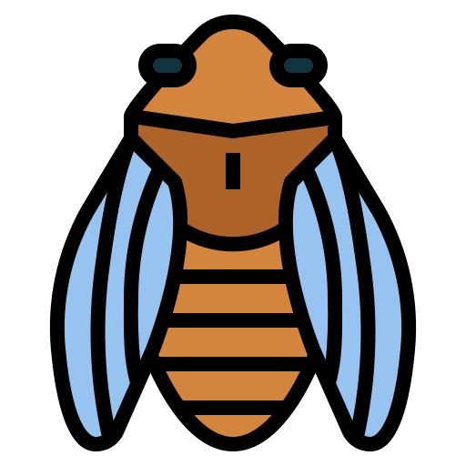
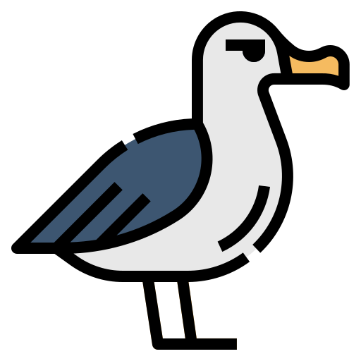
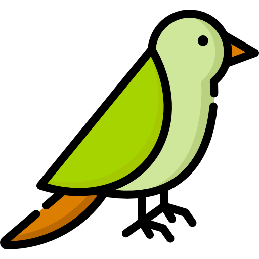
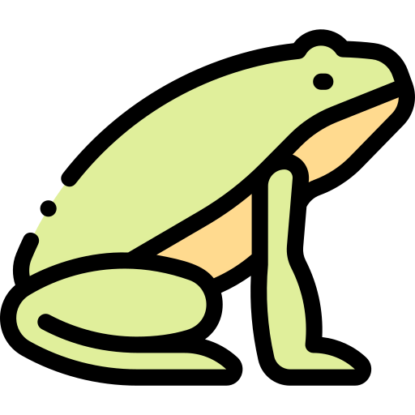

ATIVIDADES POUCO INTELIGENTES
Sistema de defesa da CIGARRA é saciar o predador
|  | Para propagar a espécie, os seres vivos desenvolvem diferentes estratégias de defesa como espinhos, cascas, ferrões e etc. Porém, alguns seres vivos desenvolveram um sistema de defesa que consiste em "saciar o predador". Nesse sistema, os seres ficam inteiramente visíveis para o predador, e, em tão grande número de indivíduos que os predadores não conseguem consumir a todos. Por fim, os poucos que sobrevivem se reproduzem propagando a espécie. A hipótese da saciedade do predador tem sido aplicada às diferentes espécies (SHIBATA et al., 2002). Esses padrões de defesa têm sido observados em plantas como algumas espécies bambu e em animais como as cigarras. |
|---|
PREGUIÇAS podem confundir os braços com galhos
| As preguiças são animais arborícolas, elas se sentam em cima de galhos, comem, dormem e até dão à luz penduradas em galhos de árvores. Os membros das preguiças são adaptados para pendurar e agarrar: suas mãos e pés especializados têm longas garras curvadas para permitir que elas se pendurem de cabeça para baixo a partir de galhos sem esforço. Como os braços são grandes (50% mais compridos que as pernas), ocasionalmente as preguiças o confundem com um galho, levando-os a cair das árvores. |
ALBATROZES não podem decolar ou pousar corretamente
|  | A maioria dos albatrozes não tem condições morfofisiológicas que lhes permitam manter um voo ativo auto-sustentado, pois suas longas asas são inadequadas para o voo ativo e a maioria das espécies não tem músculos e energia para realizar um voo contínuo. Desta forma, os albatrozes realizam voo planado e são dependentes da existência de vento e de ondas para decolar. Quando decolam, os albatrozes necessitam de efetuar uma corrida de modo a permitir a passagem suficiente de ar sob as asas para que se crie a sustentação aerodinâmica necessária para levantar voo. |
|---|
KAKAPOS saltam de árvores altas sem saber voar
| Kakapos são um grupo de papagaios que evoluíram em um ambiente livre de predadores. Sem pressão seletiva para trabalhar em uma estratégia de defesa, o animal adotou um método de defesa no qual, quando se sente ameaçado, congela estantaneamente ficando completamente imóvel no local com a espectativa de que sua plumagem o camufle no ambiente (o que pode ser fatal caso o ambiente não camufle). Embora o kakapo não possa voar, pelo fato de possuir apenas 3,3% de sua massa formada por músculos peitorais, ele escala até a copa das árvores mais altas e salta tentando usar as asas de "pára-quedas" e simplesmente cai sobre o chão com seu corpo pesado (são as espécies vivas mais pesadas de papagaio). |  |
|---|
ANUROS machos cruzam com cadáveres
|  | Frequentemente, os anuros machos copulam com as fêmeas mortas. Necrofilia já foi observada em Rana Boylii, no gênero bombina, na rã comum, na Rana pretiosa, no sapo asiático comum, Dendropsophus columbianus e a Rhinella jimi. O documentário de 1988 sobre a introdução dos sapos-cururu na Austrália Cane Toads: An Unnatural History mostra um sapo macho copulando com uma fêmea que foi atropelada por um carro há oito horas. O amplexo necrofílico em sapos pode ocorrer porque os machos montam em qualquer objeto flexível do tamanho de uma fêmea adulta. Se o objeto montado for um sapo vivo macho ou não apropriado para o acasalamento, ele o expulsará de seu corpo ou vocalizará um chamado para ser liberado. Sapos mortos não podem fazer isso, então podem ser montados por horas. A rã amazônica Rhinella proboscidea às vezes pratica o que foi denominado "necrofilia funcional": um macho agarra o cadáver de uma fêmea morta e o aperta até que seus oócitos sejam ejetados antes de fertilizá-los. |
|---|